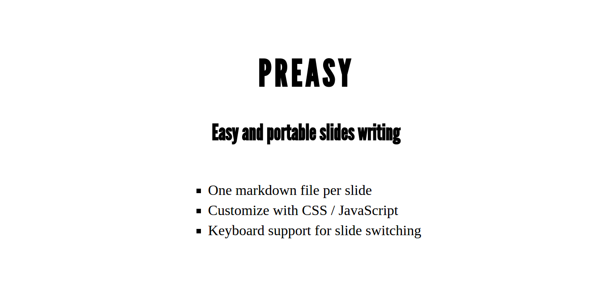

→ key moves forward← key moves backwardcss/: CSS file(s) to link with your HTML pagejs/: JavaScript file(s) to link with your HTML pageres/: Ressources used by slides (e.g. pictures)slides/: One markdown file per slide.:
css res slides
./css:
font-league-gothic.css preasy.css
./res:
font-league-gothic preasy-screenshot.png
./res/font-league-gothic:
leaguegothic-regular-webfont.eot leaguegothic-regular-webfont.ttf
leaguegothic-regular-webfont.svg leaguegothic-regular-webfont.woff
./slides:
01.md 02.md 03.md 04.md 05.md 06.mdpreasy build_build/index.html
Browse sources of this presentation on github.